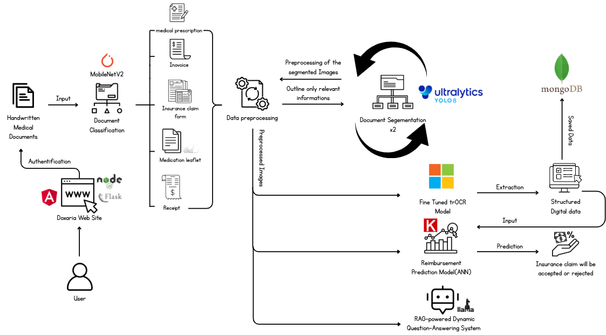
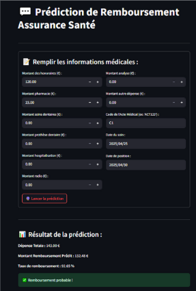
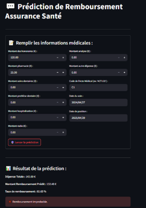
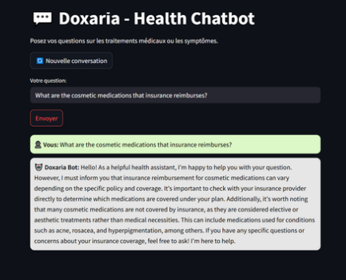
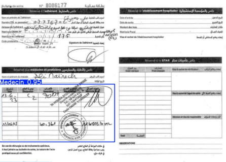
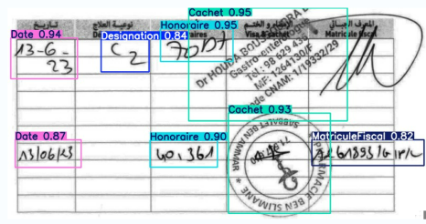

← Retour aux projets
Objectif
L’objectif principal de Doxaria est d’automatiser et d’optimiser
le traitement des documents médicaux et des demandes de remboursement grâce à
l’Intelligence Artificielle. La solution vise à réduire les tâches manuelles,
accélérer la prise de décision, améliorer la précision
des extractions OCR et standardiser l’analyse des documents de santé.
- Réduire la charge de travail liée au traitement manuel des documents médicaux.
- Accélérer le processus de remboursement pour les institutions et les patients.
- Limiter les erreurs humaines grâce à des modèles IA robustes.
- Structurer automatiquement des documents hétérogènes (bulletins, ordonnances, factures).
- Améliorer la transparence et la qualité des décisions de remboursement.
- Proposer une interface moderne intégrant un assistant IA contextuel et interactif.
Technologies utilisées & prérequis
AI / Machine Learning
- PyTorch, Keras
- Transformers (TrOCR)
- Scikit-learn, XGBoost
Vision & OCR
- TrOCR (Microsoft)
- EasyOCR
- YOLOv5 (segmentation de formulaires)
- MobileNetV2 (classification de documents)
Chatbot & LLMs
- LangChain
- OpenAI API
- Gemini API
Web & Backend
- Flask (API backend)
- Angular (frontend)
- (Optionnel) Node.js pour la passerelle API
Base de données & stockage
- MongoDB (documents & métadonnées)
Pré-requis
- Python 3.x
- Node.js & npm (pour Angular / frontend)
- MongoDB en local ou en cluster
- Clés API (OpenAI / Gemini) pour le chatbot
- GPU recommandé pour les modèles vision & OCR
Conception & visuels
Doxaria suit la méthodologie Team Data Science Process (TDSP),
depuis la compréhension métier jusqu’au déploiement d’une application web
intégrée. L’architecture repose sur plusieurs modules IA spécialisés.
Vue d’ensemble de l’architecture
- Module d’upload de documents (bulletins de soins, ordonnances, factures).
- Pipeline d’extraction OCR (TrOCR + prétraitement des images).
- Classification automatique des documents (MobileNetV2).
- Segmentation des champs clés via YOLOv5 (date, montants, zones manuscrites, etc.).
- Prédiction de remboursement via un modèle de classification (Scikit-learn / XGBoost).
- Stockage des documents et prédictions dans MongoDB.
- Chatbot IA connecté aux données et à la documentation métier.

Modules IA principaux
1. Handwriting Recognition (OCR)
- Utilisation de TrOCR-large pour la reconnaissance d’écriture manuscrite.
- Prétraitement des images (contraste, redimensionnement, binarisation si nécessaire).
- Extraction de textes structurés à partir de formulaires scannés.
2. Reimbursement Prediction
- Construction d’un dataset à partir de l’historique de remboursements.
- Ingénierie de features (codes actes, montants, pathologies, etc.).
- Modèles de classification (Scikit-learn / XGBoost) pour prédire l’éligibilité.


3. AI Chatbot Assistant
- Chatbot multilingue basé sur des LLMs (OpenAI / Gemini).
- Intégration avec LangChain pour injecter le contexte des documents.
- Réponses guidées par les règles de remboursement et les FAQs métier.

4. Classification & segmentation des documents
- MobileNetV2 pour classer le type de document (ordonnance, facture, bulletin de soin).
- YOLOv5 pour détecter et découper les zones pertinentes (date, montant, annotations).


Mise en route (procédure d’installation)
Doxaria est structuré selon la méthodologie TDSP, avec un backend IA en Python
et une interface web en Angular.
-
Cloner le dépôt :
git clone <url_du_repo_doxaria>
cd doxaria
-
Configurer l’environnement Python (backend IA) :
cd backend
python -m venv .venv
source .venv/bin/activate (Linux / macOS) ou
.venv\Scripts\activate (Windows)
pip install -r requirements.txt
-
Configurer l’accès à MongoDB et aux APIs LLM :
Créer un fichier .env (URI Mongo, clés OpenAI / Gemini, etc.).
-
Lancer l’API Flask :
flask run ou python app.py
-
Installer et lancer le frontend Angular :
cd frontend
npm install
ng serve
puis ouvrir l’URL (souvent http://localhost:4200).
-
(Optionnel) Activer les modèles lourds (YOLO, TrOCR) :
Télécharger les poids correspondants et mettre à jour les chemins dans la configuration.
Licence
Doxaria est un projet académique développé dans le cadre d’un programme de
Data Science à l’ESPRIT School of Engineering. Le code est pour l’instant
stocké dans un dépôt privé et n’est pas encore distribué sous une licence
open source publique.
À l’avenir, le projet pourra être ouvert sous une licence de type
MIT ou Apache 2.0, après validation
des aspects légaux et des dépendances.
Contribution
Les contributions se font au sein de l’équipe projet via des branches Git,
des pull requests et des revues de code.
- Amélioration de la précision des modèles (OCR, prédiction, classification).
- Optimisation des temps d’inférence et de traitement des documents.
- Enrichissement du chatbot (nouvelles sources métier, nouveaux scénarios).
- Amélioration de l’UX de l’application web et des dashboards.
- Renforcement de la documentation (technique & utilisateur).